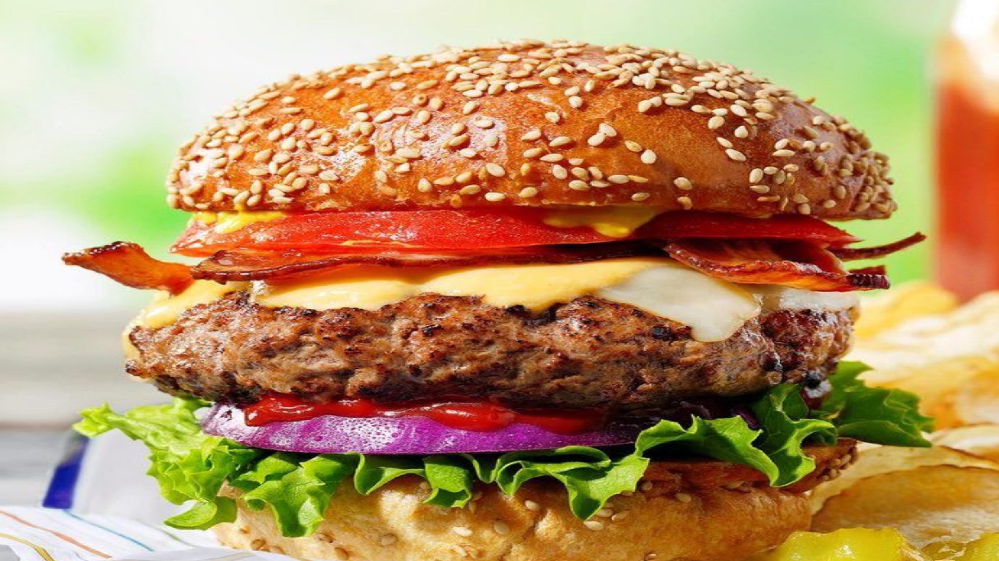

الوصفات الامريكية


البورجر

المقادير
- كيلو اللحم المفروم
- ملح وفلفل و توابل أخري جسب الرغبة
- 5 شرائح جبنة
- 5 صمون البورجر
- اضافات على حسب الرغبه كاتشب،خردل، مايونيز، مخلل، خس، طماطم، بصل
طريقة التحضير
- نقوم بخلط اللحم وباقي المكونات مع بعض
- نقوم بتشكيل اللحم الى 5 قطع
- نسخن الشواية او المقلاة إلى درجة حراره متوسطة
- نضع القطع لمدة 5 دقائق
- نضع شريحة جبنة فوق كل قطعة بورجر
- نضيف المكونات المفضلة